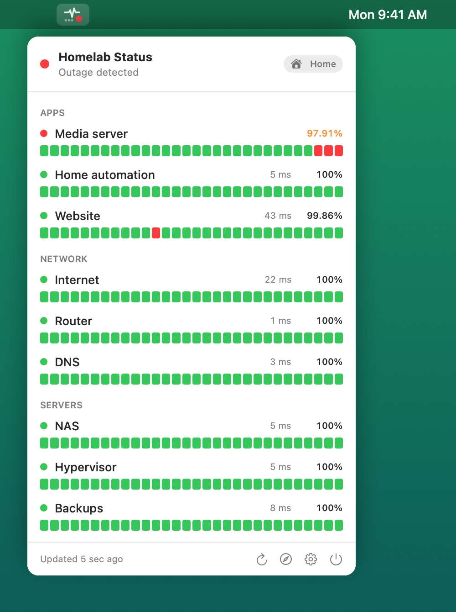
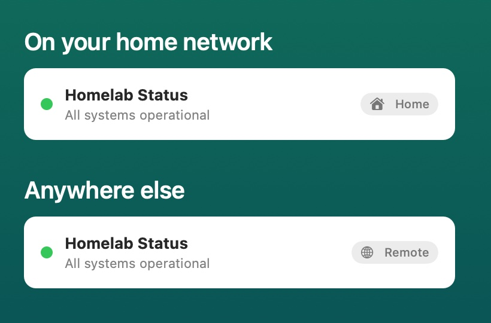

Built for homelabs
You already run Uptime Kuma. Now keep an eye on it without a browser tab.
Uptime Kuma watches your services. KumaStatusBar watches Uptime Kuma, quietly, from the menu bar, and only gets your attention when something needs it.
At your desk
Glance at the router, the NAS, your self-hosted apps and the internet connection itself, each with latency, 24-hour uptime and its last 30 heartbeats.
When something breaks
A red badge on the menu bar icon, a notification and a sound. A different sound when it recovers, so you know it's fixed without looking.
Away from home
Direct to Uptime Kuma on your network, through your Cloudflare Tunnel everywhere else. It switches on its own when you leave the house.
Alerts
Know the moment something goes down
Problems jump to the top of the list, so the one thing that's wrong is the first thing you see.
- Choose any built-in macOS sound for down and for recovered.
- Sounds play even with Focus on, for alerts you can't miss (or switch them off).
- Simulate outage lets you hear it all without breaking anything.

Home and away
Direct at home. Through your tunnel when away.
Give KumaStatusBar two addresses and it picks the right one. A small badge in the popover shows which it used: Home or Remote.
- Works on Wi-Fi, Ethernet and over a VPN back home, with no Wi-Fi network names to configure.
- Plain
http://on your LAN is fine, and self-signed certificates can be trusted. - Cloudflare Access service tokens are kept in your Keychain and only ever sent to the remote URL.

Ideas
What homelabbers watch with it
Anything Uptime Kuma can monitor and you've put on a status page shows up here. A few favourites:
Setup
Up and running in a few minutes
KumaStatusBar reads your public status page, so there's no Uptime Kuma password or API key to hand over.
Make a status page
In Uptime Kuma, create a status page and add the monitors you want in your menu bar. Use groups to keep it tidy; KumaStatusBar shows them the same way.
Optional: reach it from anywhere
Publish Uptime Kuma through a Cloudflare Tunnel. To keep it private, protect it with Cloudflare Access and create a service token with a Service Auth policy.
Paste the addresses
In KumaStatusBar's Settings, paste your home address (e.g. http://192.168.1.20:3001) and
your remote one, add the token if you have one, and click Test.
Features
Small, focused, and private
Questions
FAQ
Does it need my Uptime Kuma login or an API key?
No. It reads the same public status page you'd open in a browser, so it only sees what you've chosen to put on that page.
Can I keep my status page private?
Yes. Put it behind Cloudflare Access and give KumaStatusBar a service token. On your home network it can connect to Uptime Kuma directly, with no token involved.
Do I need Cloudflare?
No. Any address that reaches your Uptime Kuma server works, such as a reverse proxy or a VPN. Cloudflare Access support is there if you use it.
Does it work over Ethernet and VPNs?
Yes. It decides by whether your home address answers, not by Wi-Fi network name, so wired connections and VPNs home work too.
What does it collect?
Nothing. See the privacy policy.